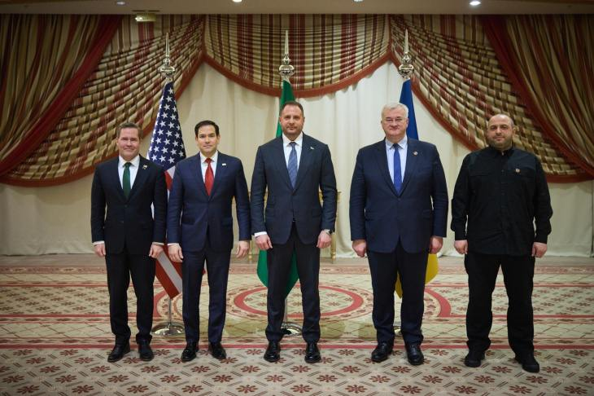

世界苦茶03月12日新闻 | 40条 | 美国与乌克兰提出30天停火协议

美国与乌克兰提出30天停火协议 | 美国与加拿大短暂加码关税战后解除 | 美国法院裁定中国赔偿240亿美元 | 达赖喇嘛发行新书确定起接班人在自由地区 | 特朗普购买一辆特斯拉以支持马斯克
历史实有主义
苦茶数据
美元兑人民币：7.23（昨日7.25，前日7.25）
美元兑日元：148.21（昨日147.26，前日147.61）
上证指数：3375（昨日3350，前日3352）
标普500指数：5572（昨日5614，前日5770）
比特币：81940（昨日80301，前日82367）
布伦特原油：70.03（昨日69.31，前日70.04）
中国新闻
• 广西书记称缅北电诈对当地影响严重 ：广西壮族自治区党委书记陈刚星期天说，不怕家丑外扬，缅北电诈把广西坑苦了，广西深受其害。根据新京报“政事儿”公号报道，中国人大三次会议广西代表团当天下午在驻地召开小组会议，审议最高人民法院工作报告、最高人民检察院工作报告。陈刚在提到人工智能安全话题时说，现在已经出现电信诈骗团伙利用人工智能从事犯罪活动，现阶段就要坚持“魔高一尺、道高一丈 ”，利用人工智能来提高反电信诈骗水平，以我之矛攻其之盾，从而解决技术进步中带来的诸多社会危害问题。
• 中国驻美大使称“外资撤离中国论”破产 ：中国驻美国大使谢锋强调，面对经济全球化遭遇逆风和回头浪，中国始终坚持对外开放不动摇，持续扩大制度型开放、自主开放和单边开放，并说“外资撤离中国论”宣告破产。中国驻美使馆官网公布，谢锋星期一应邀在一场活动上致辞时说，中国已成为150多个国家和地区的主要贸易伙伴，去年新设立外商投资企业增长9.9%，今年１月英国、韩国、荷兰对华投资增长324%、104%、76%，“‘外资撤离中国论’宣告破产，‘中国大市场是必选项’深入人心”。谢锋也说，毋庸讳言，目前中美关系面临严峻挑战，再次处于何去何从的关头，并强调极限施压注定撞上南墙，打关税战、贸易战损人更害己，禁限投资如同杀鸡取卵，以台制华只会引火烧身。
• 全国人大常委会委员长赵乐际缺席闭幕会 ：中国全国人大常委会委员长赵乐际因呼吸道感染，星期二缺席中国全国人大会议闭幕会。全国人大会议闭幕式星期二举行，应到代表2929人，实到2884人，缺席45人。闭幕会由大会主席团常务主席、全国人大常委会副委员长李鸿忠主持。
• 董明珠建议借鉴酒驾处罚力度治理网暴 ：中国格力电器董事长兼总裁董明珠认为，对惩治网暴的力度远远不够，并提议可以参考治理酒驾来打击网暴。也是全国人大代表的董明珠，星期一告诉中国红星新闻：“酒驾者可能被抓起来判刑，很多人就意识到要遵纪守法了。这样尽管没有完全杜绝酒驾，但酒驾已经大幅减少，也改变了人们的认识。”董明珠认为，要加快法治建设，提高惩处力度，现在对惩治网暴的力度是远远不够的，并说：“不能形成后果再处理，而是出现苗头就严打。”
• 达赖喇嘛新书探讨西藏未来框架 ：西藏精神领袖达赖喇嘛星期二发行新书，并称作品谈及西藏的未来框架，在他圆寂后为西藏民众在与北京之间的关系方面提供指导。达赖也说，他的转世灵童将在中国境外出生。综合法新社和路透社报道，这本名为《为无声者发声》的新书，描述达赖喇嘛代表西藏和西藏人民，与中华人民共和国历届领导人打交道的情况。1959年出逃到印度的达赖喇嘛说，新书详细描述了他70多年来为“拯救我的家园和人民”所做的不懈努力。
• 传特朗普4月访华，与习近平会面 ：香港媒体报道，美国总统特朗普最快4月赴华与中国国家主席习近平会面。香港《南华早报》星期一引述多名外交消息人士报道，特朗普在重返白宫后，看似专注与中国达成协议，他最快将于4月赴华与习近平会面。消息人士称，两人都将对方到访视为外交胜利，但初步讨论都聚焦于特朗普访华。
• 美法院裁决中国应赔偿密苏里州240亿美元 ：美国联邦地区法院法官裁定密苏里州在状告中国政府隐瞒新冠疫情的诉讼案中胜诉并判决中国支付240亿美元罚款之后，密苏里州共和党籍检察长安德鲁·贝利对法院的判决表示欢迎，强调这是“密苏里州和美国在追究中国向全球传播新冠病毒责任的斗争中，取得的里程碑式的胜利”。美联社星期一报道说，法律专家对贝利计划通过扣押中国在美资产的方式获取赔偿的做法表示怀疑，其中一位专家说“祝你好运！”密苏里州最早在2020年4月新冠疫情席卷全球的时候就对中国提起了诉讼。该诉讼指责中国掩盖了有关新冠病毒的关键信息。不过，一名联邦地区法院法官2021年援引1976年的《外国主权豁免法》驳回了这起诉讼。
• 美众议院通过两项涉及中国的法案 ：美国国会众议院一致通过两项涉及中国的法案，分别将限制国土安全部购买中国公司制造的电池以及将在国土安全部设立工作组，负责监控和应对来自中国的威胁。法案接下来将等待参议院进行审议。众议院星期一以口头表决的方式无异议通过了编号H.R.1166的《与依赖外国对手电池脱钩法》。法案在院会暂停执行规则下进行表决，国会通常采取这种方式加速推进两党议员没有争议的法案的通过。这项由共和党联邦众议员卡洛斯·吉梅内斯(Carlos Gimenez)提出的法案将禁止国土安全部从六家与中国有联系的公司购买电池。被法案点名的中国电池厂商包括宁德时代新能源科技股份有限公司、比亚迪股份有限公司、远景能源公司、亿纬锂能股份有限公司、海辰储能科技股份有限公司以及国轩高科动力能源有限公司。
亚太印太新闻
• 台役男持大陆身份证仍须服兵役 ：针对台湾国防部表示拥有大陆身份证的台湾役男仍须服义务役，台湾陆委会主委邱垂正星期二说，台湾人取得大陆身分就会丧失台湾身分，但仍须付出义务，包括兵役义务。综合联合报和中时新闻网报道，台湾立法院举行全院委员会处理今年度中央政府总预算案，邱垂正会前接受媒体联访时说，现行两岸人民关系条例规定，台湾人取得大陆身份，就会丧失、注销台湾身份。邱垂正说，注销台湾身份，包括所有权利的身份，但是义务仍要付出，包括服兵役的义务，当初设计是为了避免因为转换身分逃避兵役，不过这种人占很少数，国防部也会妥善管理，并维护国安。
• 研究显示韩国年轻人对婚姻生育观念转变 ：一项新研究指出，韩国年轻一代的婚姻和生育观念正发生深刻转变。这些传统上被期待的生活阶段，如今更多地被视为带来恐惧、悲伤和焦虑的问题，仅有9.3%表示感到幸福。《韩国先驱报》报道，韩国半岛未来人口研究所分析2017年12月至2024年11月期间，职场社交平台“Blind”上约5万条相关帖文，结果发现，三分之二的婚姻相关讨论中透露出“悲伤”“恐惧”或“厌恶”的情绪。其中，“悲伤”占32.3%，“恐惧”占24.6%，“厌恶”占10.2%。相比之下，仅有9.3%的帖子表达感到“幸福”。类似的负面情绪同样出现在生育和育儿的话题中。数据显示，六成以上生育相关的帖子表露出“厌恶”，占23.8%，“恐惧”占21.3%、“悲伤”占15.3%。在育儿主题的帖子中，近70%讨论充斥着负面情绪。
• 印尼变性人因直播言论被判亵渎罪 ：印度尼西亚一名TikTok用户因在直播中对着手机上的耶稣照片“说话”，并要求耶稣剪短头发，被判处近三年监禁。英国广播公司报道，拉图·塔利萨是一名拥有逾44万粉丝的穆斯林变性人。在一次直播中，她回应了一条建议她剪短头发以显得更男性化的评论，随后引发争议。多个基督教团体随即对她提出指控。星期一，苏门答腊棉兰一家法院裁定塔利萨违反《电子信息与交易法》，并判处她两年10个月监禁。法院认为，她的言论可能扰乱“公共秩序”和“宗教和谐”，因此判她犯下亵渎罪。
• 全球污染最严重城市榜单，印度占多数 ：最新研究显示，去年全球污染最严重的20个城市中，除一座外，其余均位于亚洲，其中13座来自全球人口最多的国家——印度。美国有线电视新闻网报道，瑞士空气质量技术公司IQAir公布的数据表明，印度东北部的工业城镇伯尼哈特去年PM2.5年均浓度高达128.2微克，超出世界卫生组织规定标准的24倍。报告还显示，巴基斯坦有四座城市上榜，中国和哈萨克斯坦分别有一座城市入列。唯一非亚洲城市为中非国家乍得的首都恩贾梅纳，被评为全球空气污染最严重的国家。同时，北美污染最严重的城市全部位于加利福尼亚州。
• 印尼与越南将双边关系提升为全面战略伙伴 ：印度尼西亚和越南同意将两国双边关系提升为全面战略伙伴关系。印尼总统普拉博沃与越南共产党中央委员会总书记苏林在雅加达独立宫举行的双边会晤中正式就此签署协议。新华社引述印尼总统秘书处发布的新闻稿称，此次会晤强调了双方加强政治、经济、教育、科学和人文交流等各个领域合作的承诺。在两位领导人的见证下，通过交换三份合作文件巩固了这一承诺。
科技新闻
• 美国科技富豪因股市波动财富缩水 ：股市波动剧烈之际，出席美国总统特朗普就职典礼的五大亿万富豪，身家已累计缩水2090亿美元，掌舵的公司市值也合计蒸发1.39万亿美元。马斯克、贝佐斯、扎克伯格 、布林、阿尔诺这五位有出席就职典礼的亿万富豪，在特朗普上任后一度因公司市值大涨，而尝到身家大幅上涨的甜头。然而随着股市激烈波动，富豪们的身家也应声缩水。据彭博亿万富翁指数统计，今年1月17日以来，这五位富豪的身家累计缩水2090亿美元，其中跌幅最大的要数马斯克，身家暴跌1480亿美元。
• 小鹏汽车计划在机器人领域投资千亿 ：中国电动车企业小鹏汽车董事长何小鹏受访时说，小鹏汽车未来或将在人形机器人产业投资上千亿人民币。中国全国人大代表何小鹏上星期六接受《证券时报》专访时说，小鹏汽车已在人形机器人产业深耕五年，未来可能还要做20年，再花500亿元人民币，甚至投入上千亿元人民币。从目前来看，小鹏汽车还处于早期阶段，投入也会相对保守。谈及为何布局人形机器人时，何小鹏说，主要出于两点考量：首先，作为一家深耕人工智能汽车领域的企业，小鹏汽车在研发中发现，机器人的技术与AI汽车约有70%的相似度，这为布局机器人领域奠定了坚实基础。其次，汽车将进化为无人驾驶汽车，越来越像机器人。因而，汽车公司必然转型为“机器人汽车公司”或“机器人与汽车深度耦合的公司”。
• 英伟达CEO黄仁勋5月赴台发表演讲 ：美国科技巨企英伟达首席执行官黄仁勋将于5月赴台，在台北国际电脑展发表演讲，分享人工智能与加速运算技术的最新进展和突破。综合壹苹新闻网和台湾《经济日报》报道，2025年台北国际电脑展主办单位之一的外贸协会星期二宣布，将邀请晶片大厂英伟达创办人暨执行长黄仁勋为台北国际电脑展发表主题演讲。据介绍，这场演讲将于5月19日上午11时在台北流行音乐中心举行，并同步进行线上直播。演讲将于4月开放报名。
• 鸿海推出繁体中文AI大模型FoxBrain ：全球最大电子产品代工制造商台湾鸿海集团宣布，推出首款具推理能力的繁体中文大型语言模型“FoxBrain”，计划利用这个模型推动人工智能在制造业、供应链管理与智慧决策领域的应用。据鸿海集团官网星期一发布的消息，旗下的鸿海研究院称，FoxBrain原为公司内部应用而设计，涵盖数据分析、决策辅助、文书协作、数学、推理解题与代码生成等功能，后续将对外开源分享。这个模型在四个星期内完成训练，过程中使用120个英伟达H100绘图处理器。
财经新闻
• 特朗普宣布购买特斯拉，以示支持马斯克 ：随着抵制特斯拉电动车的抗议活动不断升级，美国总统特朗普宣布将购买一辆全新的特斯拉电动车，以支持特斯拉首席执行长马斯克。路透社报道，特朗普星期二在他的Truth Social社交平台上发文为马斯克辩护。他称马斯克“冒着风险”帮助国家，且表现“非常出色”。特朗普写道：“为了表示对埃隆·马斯克这位真正伟大的美国人的信任和支持，我明天早上会买一辆全新的特斯拉。”
• 中美关税谈判陷入僵局，双方难达共识 ：据传中美关税谈判卡在低层阶段，无法达成共识，对此，中国外交部称，如果美方执意损害中方利益，中方必将坚决反制。中国外交部发言人毛宁星期二主持例行记者会。毛宁说，美方执意以芬太尼问题为借口，两次对中国的输美产品加征关税，中方已经多次阐明了反对的立场。中方采取的反制措施是维护自身权益的正当和必要之举。
• 日本经济产业大臣请求美豁免汽车关税 ：日本经济产业大臣武藤容治星期一在华盛顿表示，他已请求美国政府官员豁免日本的汽车和金属关税，但没有迹象显示华盛顿会同意。根据美国总统唐纳德·特朗普上个月签署的行政命令，美国对进口钢铁和铝加征的关税25%将于3月12日生效。此外，特朗普政府准备从4月起对外国进口的汽车加征关税25%，并计划实施“对等关税”，即对贸易伙伴国商品加征其对美国商品征收税率相同的关税。武藤容治星期一在华盛顿与美国商务部长霍华德·卢特尼克、美国贸易代表贾米森·格里尔和白宫国家经济委员会主任凯文·哈西特等官员举行会谈。
• 世卫因美削减资金调整员工合同政策 ：世界卫生组织正在采取新一轮成本削减措施，包括将员工合同期限设定为一年。这一调整是在美国总统特朗普于今年1月宣布削减资金后，WHO为应对预算压力而采取的多项应对举措之一。路透社报道，一份日期于星期一公开的内部备忘录显示，WHO已经开始重新设定工作优先事项，并为员工合同明确一年期限的上限。尽管备忘录未宣布立即裁员，但指出“鉴于我们面临的挑战规模，某些艰难的决定在所难免”。这份由WHO助理总干事托马斯签署的备忘录指出，过去三周内，WHO高级官员已着手制定“优先事项”，以确保组织的可持续发展。
• 中国2月汽车市场表现强劲 ：展望3月车市，中国汽车流通协会乘用车市场信息联席分会分析称，由于春节假期后的各行各业快速转入正常运作，因此3月的环比产销增长将较为迅猛。综合中新社和澎湃新闻报道，乘联会星期一发布的数据显示，中国2月乘用车市场零售138.6万辆，同比增长26%，环比下降22.8%；今年1至2月累计零售317.9万辆，同比增长1.2%。今年2月零售处于历年2月零售历史高位，1至2月恢复正增长，市场表现较强。乘联会指出，受春节较早及报废更新、置换补贴政策启动影响，叠加车企主动稳定价格预期，1至2月的行业价格战较往年明显降温。
• 本田将在广州发动机工厂削减50%产能 ：本田将把中国广东省广州市的发动机工厂产能削减一半。据日本共同社报道，记者星期一从本田公司采访获知这一消息。将实施产能减半的是本田与中国东风汽车集团合资企业东风本田发动机的广州工厂。该工厂本月底将把两条产线减少为一条，发动机组装能力将从每年52万台减少一半。
• 中国央行开展377亿元逆回购操作 ：中国人民银行开展了377亿元人民币七天期逆回购操作。据中国央行网站消息，为保持银行体系流动性充裕，中国人民银行星期二以固定利率、数量招标方式开展了377亿元逆回购操作。本次逆回购操作利率为1.5%。
• 台湾对大陆啤酒和钢铁产品发起反倾销调查 ：台湾财政部公告，将从即日起，对源自中国大陆的啤酒和部分钢铁开展反倾销调查。台财政部关务署星期二在官网公告，台湾酿酒商协会基于近年中国大陆产制的啤酒持续以低价出口至台湾，导致台湾啤酒产业遭受损害，于是向财政部申请对自中国大陆产制进口啤酒课征反倾销税及临时课征反倾销税。在同日另一份公告中，关务署指出，中国钢铁股份有限公司及中龙钢铁股份有限公司基于中国大陆钢铁长期产能过剩，近年来持续以低价出口热轧钢品至台湾，导致台湾行业遭受损害，于是向财政部申请对自中国大陆产制进口特定热轧扁轧钢品课征反倾销税及临时课征反倾销税。
俄乌战争
• 美国和乌克兰代表团3月11日晚结束在沙特阿拉伯城市吉达举行的会谈： 乌克兰表示愿意接受美国提出的立即实施为期30天临时停火的建议。停火可经双方同意延长，并须经俄罗斯接受并同时执行。美国将向俄罗斯传达，俄罗斯的对等做法是实现和平的关键。美国将立即恢复与乌克兰的情报共享，并恢复对乌克兰的安全援助。双方代表团还讨论了人道主义救援努力对于和平进程的重要性，并表示这些努力包括交换战俘和被扣押平民以及强制转移的乌克兰儿童等，尤其是在上述停火期间。双方同意各自组成谈判团队并立即开始谈判，以实现乌克兰持久和平，保障乌克兰长期安全。美国承诺与俄罗斯代表讨论具体建议。乌克兰重申欧洲盟友应参与和平进程。美乌两国总统同意尽快达成一项开发乌克兰关键矿产资源的全面协议，以加强乌克兰经济，确保乌克兰的长期繁荣和安全。乌克兰总统泽连斯基当晚说，会谈效果“良好且富有建设性”。乌方愿意接受美方30天停火的提议，但需要美方说服俄方采取相同措施，“如果俄方同意，停火将立即生效”。美国总统特朗普表示，他要就此事与俄罗斯总统普京“谈谈”，消息人士称，美国特使可能于本周晚些时候前往俄罗斯与普京会面。当被问及是否会邀请泽连斯基重返白宫时，特朗普回答说：“当然，绝对会。”
• 中欧班列在俄扣查问题已解决 ：中国驻俄罗斯大使张汉晖受访时证实中欧班列在俄被扣查情况，并称此问题经过沟通后已获得解决。也是中国全国政协委员的张汉晖星期一在北京出席两会期间，接受凤凰卫视专访时说，俄罗斯扣查中欧班列，是俄罗斯政府在2022年俄罗斯特别军事行动后，采取的一项措施，不是单纯针对中国。张汉晖透露，俄方反映，这么做是因为存在个别企业发货违规情况，运输不被许可的军民两用产品，这些产品有可能用于战场。另一个情况是，中方的报关公司填写的报关单过于简化，只填大类，让俄方不知道集装箱内运的是什么。
• 俄称一夜间击落337架乌克兰无人机 ：俄罗斯一夜之间在多个地区击落了337架乌克兰无人机，其中包括莫斯科周边的91架。俄罗斯国防部星期二发布声明称，另有126架无人机在与乌克兰接壤的库尔斯克地区被击落。法新社引述莫斯科市长谢尔盖·索比亚宁星期二通过社交媒体Telegram发布的信息说，莫斯科11日清晨遭到数十架无人机的“大规模”袭击。“国防部防空部队继续击退敌方无人机对莫斯科的大规模袭击。”
• 美中东特使拟访俄，促成俄乌停火 ：知情人士称，美国总统特朗普的中东问题特使威特科夫计划访问莫斯科，与俄罗斯总统普京会晤，寄望实现俄乌停火。彭博社引述知情人士，威特科夫计划本周前往俄罗斯，这将是他第二次以特朗普特使身份访问俄罗斯。他此次出访之际，乌克兰官员与美国国务卿鲁比奥和国家安全顾问沃尔兹在沙特阿拉伯举行会谈。威特科夫此前告诉福克斯新闻，来自乌克兰的迹象积极，有望本周与华盛顿达成协议。路透社引述他说，美方代表本周将在沙特阿拉伯与乌克兰代表会晤。“我认为我们这次去是抱着取得重大进展的期待。”
其他新闻
• 美国教育部3月11日宣布将解雇约1300名员工： 经过此前的“买断”计划、解雇试用期雇员以及此次裁员后，教育部雇员人数将仅剩最初4100人的一半左右。教育部还以未指明的“安全原因”为由，在12日关闭教育部位于华盛顿的总部和各地区办事处，雇员被禁止进入。相关地点将于13日重新开放。
• 特朗普誓言打击亲巴抗议者 ：美国总统唐纳德·特朗普星期一誓言对美国大学校园亲巴勒斯坦人的抗议者展开新的严厉打击。他说，拘捕位于纽约的哥伦比亚大学的示威领袖马哈茂德·哈利勒是“第一个逮捕行动，接下来还有许多”。“我们知道哥伦比亚和全国各地其他大学还有很多学生从事了亲恐怖分子、反犹太主义和反美活动，特朗普行政当局对此不会容忍，”这位美国领导人在他的真相社交平台上说。哈利勒周末被美国移民官员逮捕。一年前，为了反对以色列在加沙对哈马斯的战争，哥伦比亚和其他一些校园爆发了抗议运动，哈利勒是令人瞩目的抗议人士之一。哈马斯被美国认定为恐怖组织。
• 欧盟委员会主席敦促提高国防预算 ：欧盟委员会主席冯德莱恩呼吁欧洲国家大幅增加国防开支，放弃对美国和俄罗斯的幻想。冯德莱恩星期二在法国斯特拉斯堡举行的欧洲议会全会上发表演讲说：“冷战结束后，一些人认为俄罗斯可以融入欧洲的经济和安全架构，其他人则希望我们能够无限期地依赖美国的全面保护……幻想时代已经结束，欧洲需要为自己的国防承担起更多责任。”她强调，欧洲大幅增加国防开支已经刻不容缓，“这不是循序渐进的过程，而是需要迎难而上的勇气”。
• 美国削减对外援助，影响联合国项目 ：联合国人权办公室说，已收到美国政府发出的五份项目终止通知，其中包括涉及乌克兰的项目。路透社报道，联合国人权办公室发言人香达萨尼称，这些通知涉及赤道几内亚、伊拉克、乌克兰和哥伦比亚的项目，以及一个原住民基金。美国总统特朗普正在全球范围内削减数十亿美元的对外援助项目，作为全球最大援助国的一项重大开支改革措施。
• 格陵兰选举受特朗普购岛言论影响 ：格陵兰选民于星期二纷纷前往投票站，此次选举因美国总统特朗普多次扬言要从丹麦手中获取这一自治区而备受瞩目。最终选举结果预计于次日公布，各政党将随即展开协商组建新一届政府。彭博社报道，近年来，格陵兰的战略重要性日益凸显。该岛不仅蕴藏丰富的石油、天然气和矿产资源，随着海冰消融，潜在的航运通道或进一步提升其在全球贸易网络中的地位。特朗普此前多次强调格陵兰对美国国家安全的重要性。他向国会表示：“无论如何，我们会得到它。”这一执念激发了格陵兰内部日渐高涨的独立呼声，引发更多对独立议程的关注。
• 波兰计划2027年前培养10万志愿兵 ：波兰总理图斯克宣布，政府计划从明年起推出一项自愿军事训练计划，目标是在2027年培养10万名志愿者。路透社报道，图斯克星期二出席政府会议前说：“对我们来说最重要的是，每个感兴趣的人最迟可以在2026年参加这样的训练。这个目标虽有难度，但我知道可以实现。”他补充说：“到2027年，我们将具备每年训练10万名志愿者的能力……除了职业军队和领土防御部队之外，我们还必须实际建立一支预备役军队，我们的行动将为此服务。”
• 德候任总理倡导英法共享核武威慑 ：德国候任总理默茨希望与法国和英国针对共享核武器展开对话，但他强调这并不是要取代美国对欧洲的核保护伞。默茨星期天接受德国电台访问时指出，欧洲必须在核威慑方面共同变得更强大，但欧洲应坚持其目标是增强核力量，从而辅助美国的核保护。默茨说：“共享核武器是个我们需要讨论的课题……我们应该与这两个国家（英法）对话，也应该从辅助美国核保护的角度考虑这个问题。当然，我们希望看到美国维持其核保护的坚实力量。”
• 英拟将查戈斯群岛主权移交毛里求斯 ：英国正寻求就将查戈斯群岛主权移交给毛里求斯达成协议，美国总统唐纳德·特朗普上个月说“倾向于”支持这项协议。但批评人士说，由于担心中国与毛里求斯关系密切，这项协议可能威胁到美英在查戈斯群岛的联合军事基地的安全。许多岛上的原住民1960和1970年代为在迪戈加西亚岛上建立军事基地被强制驱逐，他们也批评这项协议，表示自己的声音被忽视了。
• 葡萄牙总理蒙特内格罗在11日举行的议会信任投票中未能获得多数议员支持，其领导的政府面临辞职： 葡萄牙议会当天共有224名议员参与投票，蒙特内格罗仅获得来自社民党、人民党和自由倡议党的87张信任票。根据葡萄牙宪法，政府未通过议会信任投票则必须辞职。葡萄牙总统德索萨将宣布解散议会并提前举行选举。德索萨此前曾表示，选举可能于5月11日或18日举行。蒙特内格罗政府在此期间将进入看守状态，仅处理必要和紧急事务。
• 伊朗总统对特朗普说，我不会谈判，‘你想干什么就干什么’： 伊朗国家媒体周二报道称，伊朗总统马苏德·佩泽什基安在受到威胁的情况下表示，伊朗不会与美国谈判，并告诉特朗普总统“你想干什么就干什么”。国家媒体援引佩泽什基安的话说：“他们发号施令和威胁，这对我们来说是不可接受的。我甚至不会和你谈判。你想干什么就干什么。”伊朗最高领袖阿亚图拉·阿里·哈梅内伊周六表示，德黑兰不会被胁迫进行谈判，此前一天，特朗普表示，他已致信敦促伊朗就一项新的核协议进行谈判。
• 罗马尼亚禁止极右翼乔治斯库参加罗马尼亚选举： 罗马尼亚极右翼民粹主义者卡林·乔治斯库对禁止他参加 5 月总统选举的裁决提出上诉，但败诉。宪法法院在经过两个小时的审议后于周二下午做出了最终裁决。中央选举局表示，这一决定是一致通过的。此前，中央选举局已拒绝乔治斯库参加 5 月份重新举行的总统选举。乔治斯库赢得了去年第一轮总统选举，但在情报显示俄罗斯参与建立近 800 个支持他的 TikTok 账户后，选举结果被取消。周日，选举局表示，乔治斯库的候选资格“不符合合法性条件”，因为他“违反了捍卫民主的义务”。